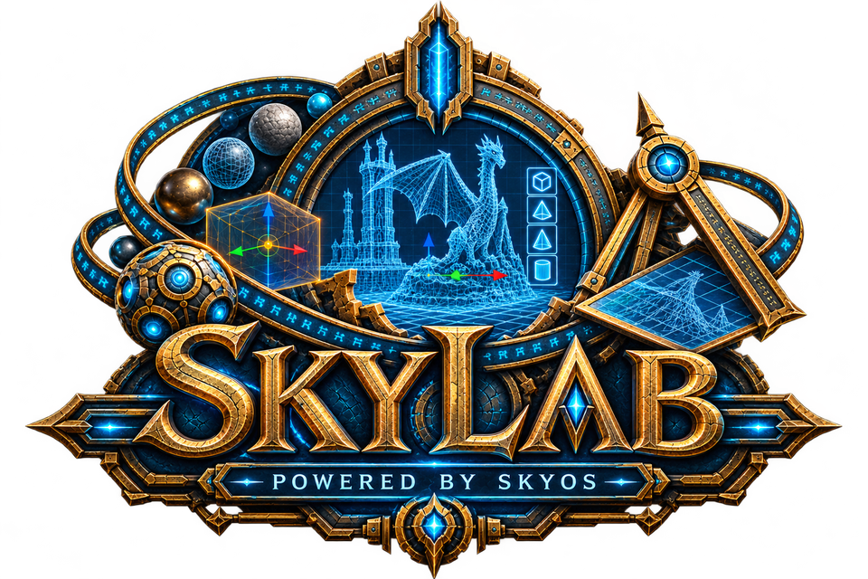

Powered by SkyOS
SkyLab
An in-game NIF inspection and preview editor for Skyrim SE and AE. Search game assets, inspect NPC appearances, and explore meshes without leaving Skyrim.
Requirements
- SkyOS Core with
SkyOS.dll. - Skyrim SE or AE, SKSE, and the matching Address Library setup.
- Install SkyLab and SkyOS in the same MO2 or Vortex profile.
SkyLab disables its input and renderer hooks when SkyOS Core is unavailable.
Open and configure
Press F7 to toggle SkyLab by default. Change the key and optional modifier in SkyViewer → SkyLab.
Modifier combinations are supported, including Alt + F1 and Shift + B. Press Escape to close.
Enable crosshair auto-open to inspect the game object you are aiming at when the editor opens.
Search and preview
- Search loose files and assets in loaded Skyrim BSA archives by NIF, texture, or linked in-game name.
- Search NPCs by name, editor ID, FormID, or FaceGen NIF ID.
- Select a result to open its mesh or NPC appearance in the preview.
- Inspect mesh and texture paths and mesh properties.
Viewport options
SkyViewer settings include collision display, wireframe, vertex normals, UV overlay, and preview field of view. They are stored separately for this module.
%LOCALAPPDATA%\SkyOS\SkyViewer\SkyLab\settings.jsonOBJ import
SkyLab can import OBJ geometry and write it as a static Skyrim SE/AE NIF using Nifly.
Static OBJ imports do not include skin weights, skeleton bindings, or animation data. They will not deform as actor or wearable armor meshes.
NPC preview note
FaceGen tint geometry may appear separately from the face in the SkyLab preview. This preview behavior does not change the NPC in Skyrim.
Guide
See SkyLab Guide.md in this SkyDocuments collection for the feature summary, requirements, settings details, and OBJ import limits.